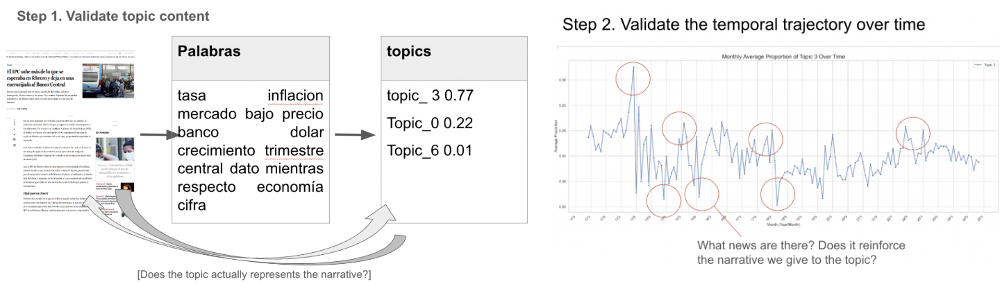

When media attention shifts toward a topic, discourse and economic activity co-move, but the signal amplifies only when collective attention on that topic is already elevated. Built on 60,000 Chilean news articles (2012-2024) using LDA, Spanish BERT, and state-dependent local projections.